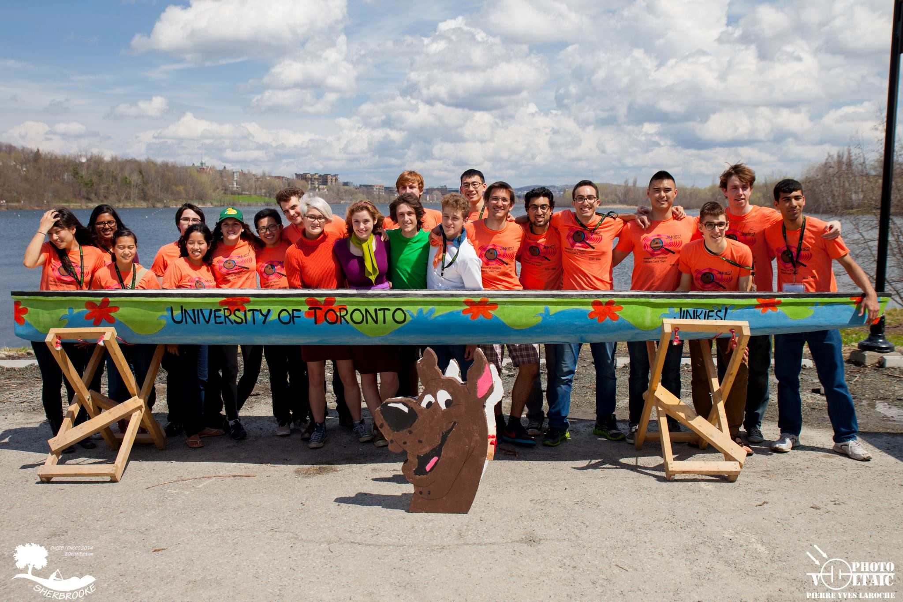

University of Toronto Concrete Canoe
Home
About
Canoes
Sponsors
News
Contact
☰
✕
Home
About
Canoes
Sponsors
News
Contact
2013 - 2014 // Jinkies
Theme: Scoobie Doo
Jinkies // 2013 - 2014

Canoe Stats
Place at CNCCC:
4th
Canoe Length:
5.65m / (18.5 ft)
Canoe Weight:
49kg / (108 lbs)
Status:
lost to time
Project Managers
•
Nigel Fung [1T4 + PEY]
•
Marco Spudic [1T3 + PEY]
Team Members
•
Dale Gottlieb [MSE 1T7]
•
James Yip-Albin [MSE 1T7]
•
Stephanie Nyikos [MSE 1T6]
•
Ron Suprun [INDY 1T7]
•
Gabe Wolofsky [CIV1T6 + PEY]
•
Hangfei Gu [CIV 1T5 + PEY]
•
Haruna Monri [1T4 + PEY]
•
Eashita Ratwani [1T5 + PEY]
•
Cory Sulpizi [CIV 1T6 + PEY]
•
Sitara Chiu [CIV 1T4 + PEY]
•
Paige Clarke [MIN 1T7]
•
Gordon Tang [1T3 + PEY]
•
Rejuana Alam [INDY]
•
Orhun Hansoy [CIV 1T6 + PEY]
•
Muhammed Yunnus [MECH 1T4 + PEY]
•
Amos Chan [CIV 1T7]
•
Karsa Modares [CIV 1T6]
•
Qazah Shezhad [1T4 + PEY]
•
Jenn Kat [INDY 1T6]
•
Allan Shek [1T3 + PEY]
•
Cole Wheeler [1T3 + PEY]
•
Michelle Le [1T3 + PEY]
← Back to All Canoes